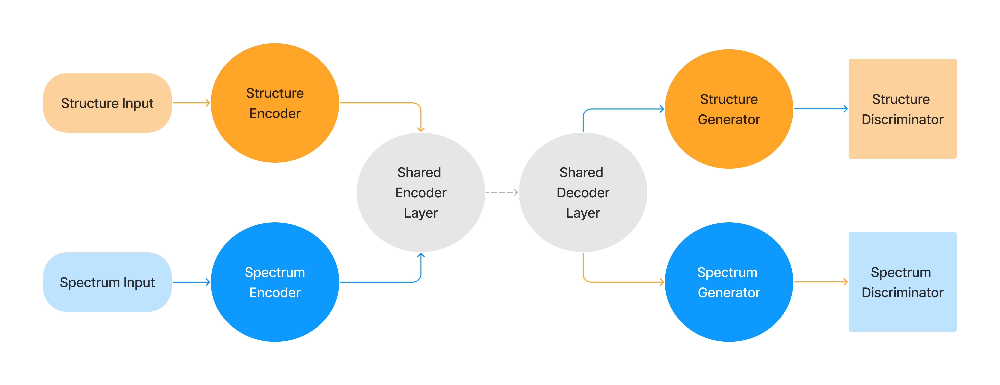

Library of Models
MLP
The Multi-Layer Perceptron (MLP) model is a feedforward artificial neural network. In XANESNET, an MLP consists of an input layer, one or more hidden layers, and an output layer. All layers are dense, meaning they are fully connected. Each hidden layer comprises a linear layer, a dropout layer and activation function.
Users can define the number of hidden layers, the dropout rate, and the type of activation function through the input file. Additionally, the model considers a shrink rate which multiplicatively reduce the size of each subsequent hidden layer, in order to help in reducing computational complexity and controlling overfitting.
Input file:
type: mlpparams:hidden_size(int): The size of the initial hidden layer.dropout(float): Dropout probability for the hidden layer.num_hidden_layers(int): Number of hidden layers.shrink_rate(float): Rate to reduce the hidden layer size multiplicatively.activation(str): Type of activation function. Option: relu or sigmoid or tanh or prelu or elu or leakyrelu or selu
- Example:
model: type: mlp params: hidden_size: 512 dropout: 0.2 num_hidden_layers: 5 shrink_rate: 0.5 activation: prelu
CNN
Convolutional Neural Network (CNN) is a type of deep neural network commonly used for image analysis. The CNN model implemented in the XANESNET includes an input layer, one or more convolutional layers, two dense layers, and an output layer. Each layer plays a role in extracting and transforming features from the input data.
Each convolutional layer comprises a 1D convolution layer, batch normalisation, activation function, and a dropout layer. The number of output channels for the initial convolutional layer is defined in the input file, and for each subsequent convolutional layer, the channel number is increased multiplicatively.
For the two dense layers, the first layer includes a linear layer, a dropout rate, and an activation function. The second dense layer consists solely of a linear layer.
Input file:
type: cnnparams:hidden_size(int): The size of the initial hidden layer.dropout(float): Dropout probability for the hidden layer.num_hidden_layers(int): Number of hidden layers.shrink_rate(float): Rate to reduce the hidden layer size multiplicatively.activation(str): Type of activation function. Option: relu or sigmoid or tanh or prelu or elu or leakyrelu or seluout_channel(int): Number of output channels for the initial convolutional layer.channel_mul(int): Channel multiplication factor for increasing output channels in subsequent convolutional layers.kernel_size(int): The size of the convolutional kernelstride(int): Stride of the convolution operation.
- Example:
model: type: cnn params: hidden_size: 64 dropout: 0.2 num_conv_layers: 3 activation: prelu out_channel: 32 channel_mul: 2 kernel_size: 3 stride: 1
LSTM
Long Short-Term Memory Networks (LSTM) is special type of recurrent neural network with additional memory cells to handles long-term dependencies in sequence data. The LSTM model implemented in XANESNET consists of a bidirectional LSTM layer follow by a feedforward neural network with two dense layers.
The defined LSTM is bidirectional, processing the input sequence in both forward and backward directions. The output size of the LSTM is 2 x the number of features in the LSTM hidden state. The intermediate hidden size of the following FNN is user-specified.
Input file:
type: lstmparams:hidden_size(int): The size of LSTM hidden state.hidden_out_size(float): The output size of intermediate hidden layer.num_layers(int): Number of hidden layers.dropout(float): Dropout probability for the hidden layer.activation(str): Type of activation function. Option: relu or sigmoid or tanh or prelu or elu or leakyrelu or selu
- Example:
model: type: lstm params: hidden_size: 100 hidden_out_size: 50 num_layers: 1 dropout: 0.2 activation: prelu
AE-MLP
Autoencoder Multilayer Perceptron (AE-MLP) is a type of deep neural network used for unsupervised learning of data encodings. In XANESNET, the architecture of AE-MLP includes three main parts: encoder, decoder, and dense layers.
The encoder is constructed using one or more hidden layers, with each layer
consists of a linear layer and activation function.
The size of each hidden layer decreases multiplicatively
based on the user-specified value shrink_rate. The decoder has a
similar structure with the size of each hidden layer instead
increasing multiplicatively.
The dense layers that perform prediction consist of linear layers.
The first dense layer also include activation function and a dropout layer.
The AE-MLP model can reconstruct the input data as well as predict the output data. Reconstruction performs a forward pass through the encoder and decoder. Prediction performs a forward pass through the encoder and dense layers.
Input file:
type: ae_mlpparams:hidden_size(int): The size of the initial hidden layer.dropout(float): Dropout probability for the hidden layer.num_hidden_layers(int): Number of hidden layers.shrink_rate(float): Rate to change the hidden layer size multiplicatively.activation(str): Type of activation function. Option: relu or sigmoid or tanh or prelu or elu or leakyrelu or selu
- Example:
model: type: ae_mlp params: hidden_size: 512 dropout: 0.2 num_hidden_layers: 5 shrink_rate: 0.5 activation: prelu
AE-CNN
Autoencoder Multilayer Perceptron (AE-MLP) is a type of deep neural network used for unsupervised learning of data encodings. In XANESNET, the architecture of AE-CNN includes three main parts: encoder, decoder, and dense layers.
The encoder is constructed using one or more hidden layers, with each layer consists of a 1D convolutional layer and activation function. The number of output channels for the initial convolutional layer is defined in the input file, and for each subsequent convolutional layer, the channel number is increased multiplicatively. The decoder is constructed as a sequence of transpose convolutional layers with dimensions matching the corresponding layers in the encoder. The dense layers that perform prediction consist of linear layers. The first dense layer also include activation function and a dropout layer.
The AE-CNN model can reconstruct the input data as well as predict the output data. Reconstruction performs a forward pass through the encoder and decoder. Prediction performs a forward pass through the encoder and dense layers.
Input file:
type: ae_cnnparams:hidden_size(int): The size of the initial hidden layer.dropout(float): Dropout probability for the hidden layer.num_hidden_layers(int): Number of hidden layers.shrink_rate(float): Rate to reduce the hidden layer size multiplicatively.activation(str): Type of activation function. Option: relu or sigmoid or tanh or prelu or elu or leakyrelu or seluout_channel(int): Number of output channels for the initial convolutional layer.channel_mul(int): Channel multiplication factor for increasing output channels in subsequent convolutional layers.kernel_size(int): The size of the convolutional kernelstride(int): Stride of the convolution operation.
- Example:
model: type: ae_cnn params: hidden_size: 64 dropout: 0.2 num_conv_layers: 3 activation: prelu out_channel: 32 channel_mul: 2 kernel_size: 3 stride: 1
AEGAN-MLP
The aegan_mlp model trains both structure and spectra at the same time
using two autoencoders or generators that have shared parameters and two discriminators.
The discriminators are used to encourage better performance from the generators,
whilst the generators try to fool the discriminators.
This structure allows different paths through the model for either data type.
It can be used to reconstruct the input data or predict the output data
for either structure or spectra without changing the model.
All constituent parts of the model are multilayer perceptron networks.
Aside from input and output shape,
the dimension of the linear layers is currently fixed.
The generative and discriminative parts of the model can have different loss functions,
learning rates and optimisers.
Training of the AEGAN is achieved as alternating updates of the generative and discriminative parts of the model. The loss for the generative part is calculated as the sum of the scaled difference between model output and target output for both reconstructions and predictions for spectra and structure. The individual losses are currently scaled by the max value of the model output to compensate for the scaling differences between spectra and structure.
The discriminator part of the model tries to predict whether the data is real - i.e. from the training set - or fake - produced from the generative part of the model. The total loss is the sum of the real loss and fake loss. The fake loss is calculated as the difference between the predicted labels for the real and fake data produced by the generator. The real loss is calculated as the the difference between the predicted labels for the fake data and the true label for the data.
Network Diagram:
Input file:
type: aegan_mlpparams:hidden_size(int): The size of the initial hidden layer.dropout(float): Dropout probability for the hidden layer.n_hl_gen(int): Number of hidden layers for structure encoder & spectrum encoder in generative part.n_hl_shared(int): Number of hidden layers for shared encoder & shared decoder in generative part.n_hl_dis(int): Number of hidden layers for discriminative partactivation(str): Type of activation function. Option: relu or sigmoid or tanh or prelu or elu or leakyrelu or selulr_gen(float): Learning rate for generative part.lr_dis(float): Learning rate for discriminative part.optim_fn_gen(str): Type of optimisation function for generative part. Options: Adam or SGD or RMSpropoptim_fn_dis(str): Type of optimisation function for discriminative part. Options: Adam or SGD or RMSproploss_gen: Loss function for generative part.loss_fn(str): Type of loss function. Options: mse or bce or emd or cosine or l1 or wccloss_args(float or ‘null’): Additional arguments for the loss function if needed.loss_reg_type(str): regularisation type. Options: null or L1 or L2loss_reg_param(float): strength of regularisation.
loss_dis: Loss function for discriminative part.loss_fn(str): Type of loss function. Options: mse or bce or emd or cosine or l1 or wccloss_args(float or ‘null’): Additional arguments for the loss function if needed.loss_reg_type(str): regularisation type. Options: null or L1 or L2loss_reg_param(float): strength of regularisation.
- Example:
model: type: aegan_mlp params: hidden_size: 256 dropout: 0.0 n_hl_gen: 2 n_hl_shared: 2 n_hl_dis: 2 activation: prelu lr_gen: 0.01 lr_dis: 0.0001 optim_fn_gen: Adam optim_fn_dis: Adam loss_gen: loss_fn: mse loss_args: 10 loss_reg_type: null loss_reg_param: 0.001 loss_dis: loss_fn: bce loss_args: null loss_reg_type: null loss_reg_param: 0.001